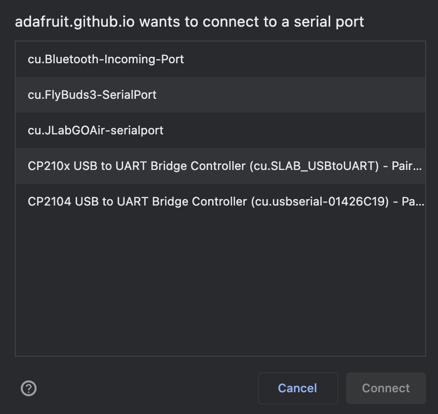

Sorry, Web Serial is not supported on your browser at this time. Browsers we expect to work:
- Google Chrome 89 (and higher)
- Microsoft Edge 89 (and higher)
- Opera 75 (and higher)
Install Adafruit.IO WipperSnapper
-
Find your board in this list:
Don't see your board? Visit the quick-start guide and follow the instructions for your hardware.
-
Make sure your board is plugged into this computer via a Serial connect (probably a USB cable)
-
Now connect to your device by clicking this button:
You'll see a Web Serial menu appear, similar to this:
If you aren't sure which to choose, look for words like "USB", "UART", and "Bridge Controller". There may be more than one right option depending on your system configuration. Experiment if needed!